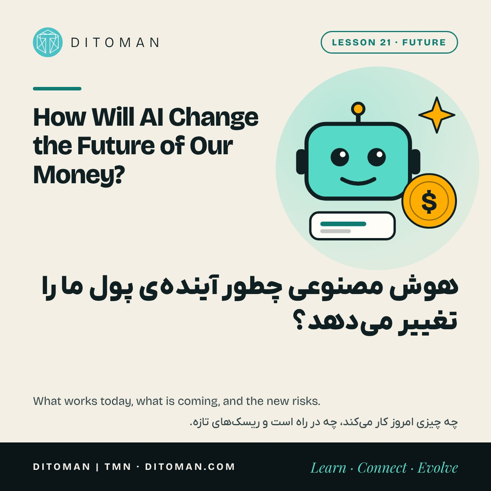
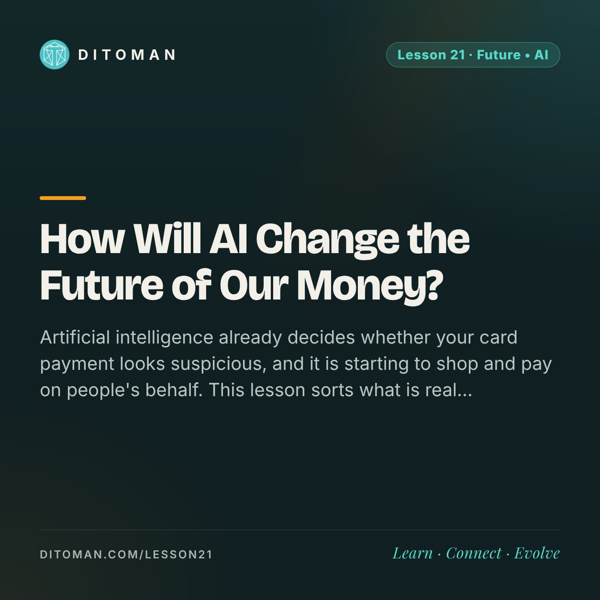

How Will AI Change the Future of Our Money?
هوش مصنوعی چطور آیندهی پول ما را تغییر میدهد؟
Artificial intelligence already decides whether your card payment looks suspicious, and it is starting to shop and pay on people's behalf. This lesson sorts what is real today from what is still a promise, and names the new risks clearly.
هوش مصنوعی همین حالا تصمیم میگیرد پرداخت کارتی ما مشکوک است یا نه، و کمکم دارد بهجای آدمها خرید و پرداخت میکند. این درس آنچه امروز واقعی است را از آنچه هنوز وعده است جدا میکند و ریسکهای تازه را روشن نام میبرد.
Lesson Content
محتوای درس
Read the lesson in English or Persian.
درس را به فارسی یا انگلیسی بخوانید.
Lesson 20 followed money from the branch to the app. The next step has already begun: from the app to an assistant that does things for you.
Artificial intelligence, or AI, is a broad name for software that learns patterns from data instead of following only fixed rules. It is worth looking at carefully, because around money the hopeful stories and the frightening ones are both partly true.
01. Where AI already works quietly
You have been using AI in finance for years without seeing it.
Fraud detection: when your bank answers the question from Lesson 14, a model compares the payment with millions of others in a fraction of a second. A purchase in an unusual place at an unusual hour gets blocked or checked.
Credit decisions: lenders use models to estimate who will repay, which is how a loan can be approved in a minute, as in Lesson 19.
Customer service: chat assistants answer routine questions at any hour.
These uses are mature. They make finance faster and cheaper, and they catch a great deal of fraud that people would miss.
02. What is new: assistants you can talk to
The newer AI systems understand ordinary language. That brings three things within reach of ordinary people.
Explaining: an assistant can explain a contract, a fee table or a financial term in plain words, in your own language.
Organising: it can sort a year of spending into categories and show where the money went.
Planning: it can lay out the options for a decision and the questions to ask.
This is real help, and for people who never had access to a financial adviser it is new.
03. What is arriving: AI that pays
The step now being built is an assistant that does not just advise, but acts: it finds the product, compares prices and pays.
Payment networks are preparing for this. Mastercard said its first payment made by an AI agent took place on its network in the third quarter of 2025, and it has been rolling out a service that registers and verifies such agents. Visa is building similar tools. Some crypto projects are designing payments between software agents using stablecoins.
For this to be safe, three things have to be clear in every payment: which person the agent acts for, what limits that person set, and who is responsible when it buys the wrong thing. Those rules are still being written.
| Stage | What it does | Where it stands | Your part |
|---|---|---|---|
| In the background | Spots fraud, scores loans | Mature, used for years | Ask why a decision was made |
| Assistant | Explains, organises, plans | Available now | Check the important facts |
| Agent | Shops and pays for you | Arriving; rules being written | Set limits and review |
04. The new risks
Convincing fakes: the same technology produces cloned voices and faces. In 2024 an employee of the engineering firm Arup in Hong Kong sent about 25 million dollars after a video call in which every other participant was a fake. Lesson 17 showed how fast impersonation scams are growing.
Confident mistakes: a language model can state something false in a calm, fluent voice. It may invent a number, a rule or a source. With money, an error that sounds right is more dangerous than one that sounds wrong.
Hidden unfairness: a model trained on past decisions can repeat past bias, refusing people for reasons nobody can explain to them.
Privacy: an assistant is only as helpful as the data you give it. Bank statements, balances and identity documents are exactly what a criminal wants too.
05. Using AI well with money
Treat an assistant as a well-read helper, not as an authority.
Ask it to explain, then check the important facts against the original contract, the official site or a person who is accountable.
Never paste secrets: no recovery phrase, no card number, no one-time code. Lesson 13's rule has no exception for machines.
Agree a family code word for urgent money requests by phone or video. A cloned voice does not know it.
Keep the final decision yours. If an assistant can spend, give it a small limit and review what it did.
06. Where this may go
If the pieces come together, the picture is a hopeful one: an assistant that watches for a better rate, warns you before a fee, catches a scam before you answer it and explains every step in your own language. Good financial help, which used to belong to the wealthy, could become ordinary.
Getting there depends less on cleverer models than on clear rules, honest design and people who understand what the tools can and cannot do. That last part is what these lessons are for.
What to take from this
AI has worked in the background of finance for years, mainly against fraud and in lending.
New assistants explain and organise well. They can also be confidently wrong.
AI that pays for you is arriving, and the rules of responsibility are still being written.
The same tools power better scams. Verify urgent requests through a second channel.
Use AI to understand. Keep secrets and final decisions to yourself.
درس ۲۰ پول را از شعبه تا اپ دنبال کرد. قدم بعدی هم شروع شده: از اپ به دستیاری که کارها را بهجای ما انجام میدهد.
هوش مصنوعی نام کلیِ نرمافزارهایی است که بهجای پیروی از قواعد ثابت، الگوها را از داده یاد میگیرند. میارزد با دقت نگاهش کنیم، چون دربارهی پول، هم روایتهای امیدوارکننده و هم روایتهای ترسناک هر دو تا حدی درستاند.
۰۱. جاهایی که هوش مصنوعی از قبل بیصدا کار میکند
سالهاست در امور مالی از هوش مصنوعی استفاده میکنیم، بیآنکه ببینیمش.
تشخیص تقلب: وقتی بانک ما به پرسش درس ۱۴ جواب میدهد، یک مدل در کسری از ثانیه آن پرداخت را با میلیونها پرداخت دیگر مقایسه میکند. خریدی در جایی غیرعادی و ساعتی غیرعادی، مسدود یا بررسی میشود.
تصمیم اعتباری: وامدهندهها با مدل تخمین میزنند چه کسی وام را پس میدهد. برای همین وام میتواند در یک دقیقه تأیید شود؛ همان درس ۱۹.
پاسخگویی به مشتری: دستیارهای گفتوگو در هر ساعتی به پرسشهای معمول جواب میدهند.
این کاربردها جاافتادهاند. امور مالی را سریعتر و ارزانتر میکنند و جلوی مقدار زیادی از تقلبهایی را میگیرند که از چشم آدمها دور میماند.
۰۲. چیز تازه: دستیاری که میشود با آن حرف زد
سامانههای جدیدتر زبان معمولی را میفهمند. این، سه چیز را در دسترس آدمهای معمولی میگذارد.
توضیح دادن: دستیار میتواند یک قرارداد، جدول کارمزد یا اصطلاح مالی را به زبان ساده و به زبان خودمان توضیح بدهد.
مرتب کردن: میتواند خرج یک سال را دستهبندی کند و نشان بدهد پول کجا رفته است.
برنامهریزی: میتواند گزینههای یک تصمیم و پرسشهایی را که باید پرسید کنار هم بگذارد.
این کمکی واقعی است و برای کسانی که هیچوقت به مشاور مالی دسترسی نداشتهاند، تازه است.
۰۳. چیزی که در راه است: هوش مصنوعیای که پرداخت میکند
قدمی که حالا ساخته میشود دستیاری است که فقط مشورت نمیدهد و خودش عمل میکند: کالا را پیدا میکند، قیمتها را مقایسه میکند و میپردازد.
شبکههای پرداخت خودشان را برای این آماده میکنند. مسترکارت گفته اولین پرداختی که یک عامل هوش مصنوعی انجام داد، در فصل سوم ۲۰۲۵ روی شبکهاش ثبت شده و سرویسی را راه انداخته که این عاملها را ثبت و تأیید میکند. ویزا هم ابزارهای مشابهی میسازد. بعضی پروژههای کریپتو هم پرداخت میان عاملهای نرمافزاری را با استیبلکوین طراحی میکنند.
برای اینکه این کار امن باشد، در هر پرداخت سه چیز باید روشن باشد: عامل بهجای چه کسی عمل میکند، آن فرد چه سقفی گذاشته و اگر چیز اشتباهی خرید، مسئول کیست. این قواعد هنوز در حال نوشته شدن است.
| مرحله | چه میکند | در چه وضعی است | سهم ما |
|---|---|---|---|
| در پسزمینه | تقلب را میگیرد، وام را میسنجد | جاافتاده، سالهاست در کار است | بپرسید تصمیم چرا گرفته شد |
| دستیار | توضیح میدهد، مرتب میکند، برنامه میریزد | همین حالا در دسترس | نکتههای مهم را بررسی کنید |
| عامل | بهجای ما خرید و پرداخت میکند | در راه؛ قواعدش نوشته میشود | سقف بگذارید و مرور کنید |
۰۴. ریسکهای تازه
جعل باورپذیر: همین فناوری صدا و چهرهی جعلی هم میسازد. در سال ۲۰۲۴ کارمند شرکت مهندسی «آروپ» در هنگکنگ، بعد از یک تماس تصویری که همهی شرکتکنندگان دیگرش جعلی بودند، حدود ۲۵ میلیون دلار منتقل کرد. درس ۱۷ نشان داد کلاهبرداری با جعل هویت چقدر سریع رشد میکند.
اشتباه با اعتمادبهنفس: یک مدل زبانی میتواند چیزی نادرست را با لحنی آرام و روان بگوید. ممکن است یک عدد، قاعده یا منبع را از خودش بسازد. در پول، اشتباهی که درست به نظر میرسد از اشتباهی که غلط به نظر میرسد خطرناکتر است.
بیعدالتی پنهان: مدلی که از تصمیمهای گذشته یاد گرفته، میتواند سوگیری گذشته را تکرار کند و آدمها را به دلیلهایی رد کند که کسی نمیتواند برایشان توضیح بدهد.
حریم خصوصی: دستیار فقط به اندازهی دادهای که به او میدهیم کمک میکند. صورتحساب بانکی، موجودی و مدارک هویتی دقیقاً همان چیزهاییاند که کلاهبردار هم میخواهد.
۰۵. استفادهی درست از هوش مصنوعی در پول
با دستیار مثل یک همراه پرمطالعه رفتار کنید، نه مثل یک مرجع.
بخواهید توضیح بدهد و بعد نکتههای مهم را بررسی کنید؛ با اصل قرارداد، سایت رسمی یا کسی که پاسخگوست.
هیچ رازی را وارد نکنید: نه عبارت بازیابی، نه شمارهی کارت، نه رمز یکبارمصرف. قاعدهی درس ۱۳ برای ماشینها هم استثنا ندارد.
در خانواده یک کلمهی رمز قرار بگذارید برای درخواستهای فوری پول در تماس تلفنی یا تصویری. صدای جعلی آن را نمیداند.
تصمیم نهایی را خودتان بگیرید. اگر دستیار میتواند خرج کند، سقف کوچکی برایش بگذارید و کارهایش را مرور کنید.
۰۶. این مسیر به کجا میرود
اگر تکهها کنار هم بنشینند، تصویر امیدوارکننده است: دستیاری که دنبال نرخ بهتر میگردد، پیش از یک کارمزد هشدار میدهد، کلاهبرداری را پیش از آنکه جوابش را بدهیم میگیرد و هر قدم را به زبان خودمان توضیح میدهد. کمک مالی خوب، که روزی فقط در دسترس ثروتمندان بود، میتواند عادی شود.
رسیدن به آنجا کمتر به مدلهای باهوشتر و بیشتر به قواعد روشن، طراحی صادقانه و آدمهایی بستگی دارد که بدانند این ابزارها چه میتوانند و چه نمیتوانند. این درسها برای همین بخش آخر است.
چه برداشتی کنیم
هوش مصنوعی سالهاست در پسزمینهی امور مالی کار میکند؛ بیشتر برای مقابله با تقلب و در وامدهی.
دستیارهای تازه خوب توضیح میدهند و مرتب میکنند. ممکن است با اعتمادبهنفس هم اشتباه کنند.
هوش مصنوعیای که بهجای ما پرداخت میکند در راه است و قواعد مسئولیتش هنوز نوشته میشود.
همین ابزارها کلاهبرداری را هم قویتر کردهاند. درخواست فوری را از یک راه دوم تأیید کنید.
از هوش مصنوعی برای فهمیدن استفاده کنید. رازها و تصمیم نهایی را پیش خودتان نگه دارید.
Two stories from the site
دو روایت از همین سایت
Lesson 17 covers the scam patterns that AI is now making more convincing. Lesson 20 explains the move from branches to apps that came before this step.
درس ۱۷ الگوهای کلاهبرداریای را مرور میکند که هوش مصنوعی حالا باورپذیرترشان کرده است. درس ۲۰ حرکت از شعبه به اپ را توضیح میدهد که پیش از این قدم آمد.
Key Concepts
مفاهیم کلیدی
- Artificial intelligence
- Machine learning model
- Fraud detection
- Credit scoring
- Language assistant
- AI agent
- Agentic payments
- Deepfake
- Confident error (hallucination)
- Second-channel verification
- هوش مصنوعی
- مدل یادگیری ماشین
- تشخیص تقلب
- اعتبارسنجی
- دستیار زبانی
- عامل هوش مصنوعی
- پرداخت بهدست عامل
- جعل عمیق
- اشتباه با اعتمادبهنفس
- تأیید از راه دوم
Learning Objectives
اهداف یادگیری
- Name three places where AI already works in finance.
- Say what a language assistant does well and where it can fail.
- Explain what an AI agent that pays is, and which three things must be clear.
- List the four new risks.
- Describe safe habits for using AI with money.
- سه جایی را که هوش مصنوعی از قبل در امور مالی کار میکند نام ببرید.
- بگویید دستیار زبانی چه کاری را خوب انجام میدهد و کجا ممکن است خطا کند.
- توضیح دهید عامل هوش مصنوعیِ پرداختکننده چیست و کدام سه چیز باید روشن باشد.
- چهار ریسک تازه را بشمارید.
- عادتهای امن استفاده از هوش مصنوعی در پول را توضیح دهید.
Quiz
آزمونک
Check what stayed with you. The answer is under each question.
ببین چه چیزی در ذهنت مانده. پاسخ زیر هر پرسش آمده است.
Question 1
پرسش ۱
Where has AI worked in finance for years?
هوش مصنوعی سالهاست کجای امور مالی کار میکند؟
A. Fraud detection on card payments
الف. تشخیص تقلب در پرداخت کارتی
B. Printing banknotes
ب. چاپ اسکناس
C. Setting central bank interest rates
ج. تعیین نرخ بهرهی بانک مرکزی
Correct answer: A
پاسخ درست: الف
Question 2
پرسش ۲
What is the main danger of a language assistant's mistakes?
خطر اصلی اشتباههای یک دستیار زبانی چیست؟
A. They are always obvious
الف. همیشه آشکارند
B. They can sound confident and correct
ب. میتوانند مطمئن و درست به نظر برسند
C. They only happen in English
ج. فقط در انگلیسی پیش میآیند
Correct answer: B
پاسخ درست: ب
Question 3
پرسش ۳
For an AI agent to pay safely, what must be clear?
برای اینکه عامل هوش مصنوعی امن پرداخت کند، چه چیزی باید روشن باشد؟
A. The colour of the app
الف. رنگ اپ
B. Who it acts for, its limits, and who is responsible
ب. بهجای چه کسی عمل میکند، سقفش چیست و مسئول کیست
C. How many languages it speaks
ج. چند زبان بلد است
Correct answer: B
پاسخ درست: ب
Question 4
پرسش ۴
A relative calls by video asking for money urgently. What is the safest step?
یکی از بستگان در تماس تصویری فوری پول میخواهد. امنترین کار چیست؟
A. Send it at once
الف. فوراً بفرستید
B. Ask the assistant if the face looks real
ب. از دستیار بپرسید چهره واقعی است یا نه
C. Verify through a second channel or a family code word
ج. از راه دوم یا با کلمهی رمز خانوادگی تأیید کنید
Correct answer: C
پاسخ درست: ج
Question 5
پرسش ۵
What should never be pasted into an AI assistant?
چه چیزی را هرگز نباید در دستیار هوش مصنوعی وارد کرد؟
A. A recovery phrase or one-time code
الف. عبارت بازیابی یا رمز یکبارمصرف
B. A question about inflation
ب. پرسشی دربارهی تورم
C. A financial term you want explained
ج. اصطلاحی مالی که میخواهید توضیح داده شود
Correct answer: A
پاسخ درست: الف
Sources
منابع
- Digital Commerce 360: Mastercard's first agentic transaction and Agent Pay rollout (31 October 2025)
- Decrypt: AI and impersonation in 2025 crypto scams, Chainalysis
- World Economic Forum: Arup deepfake fraud case
- Bank for International Settlements, Annual Report 2024: Artificial intelligence and the economy
This field changes quickly. Product names and rollout dates are as reported in the sources and may have moved on.
این حوزه سریع تغییر میکند. نام محصولها و تاریخها همان است که در منبعها آمده و ممکن است عوض شده باشد.
با هم دنبال میکنیمFollow along
New lessons are announced first on Ditoman's channels.
درسهای تازه اول در کانالهای دیتومان معرفی میشوند.